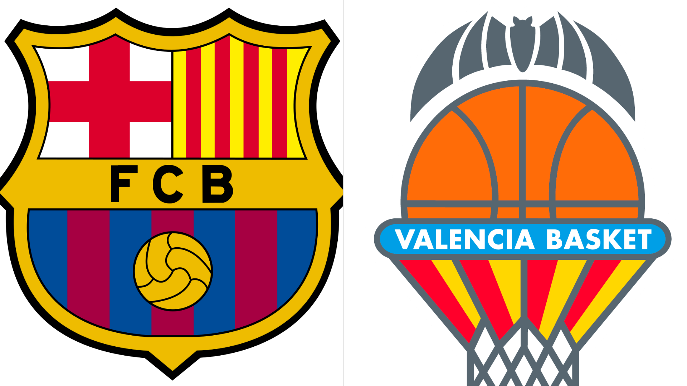
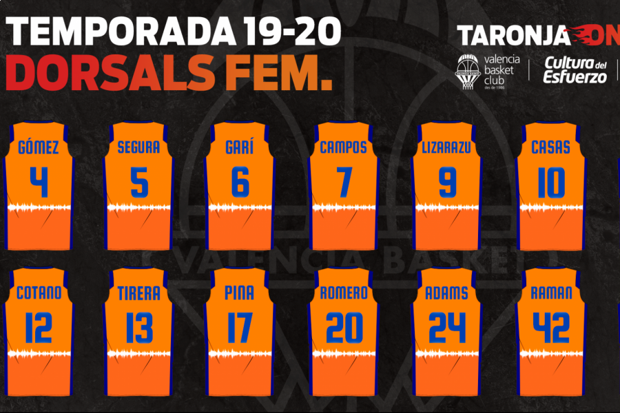
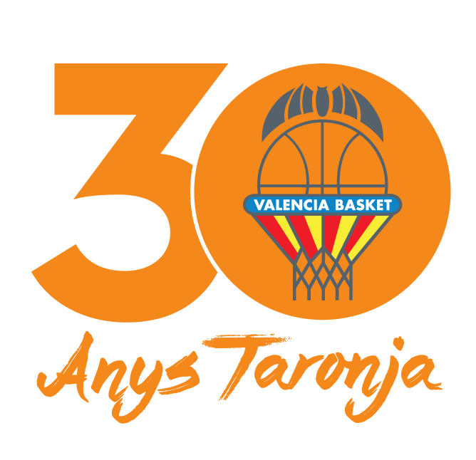

Noticia Destacada: València Bàsquet

València Bàsquet se prepara para la nueva temporada
La emoción crece en la ciudad
El equipo de València Bàsquet ha presentado sus planes y estrategias para afrontar la próxima temporada. Los aficionados esperan un equipo renovado y lleno de energía que les brinde grandes emociones en la cancha.
Leer másOtras Noticias de València Bàsquet

Victoria histórica en la cancha
El triunfo que marcó el inicio de la temporada
València Bàsquet consiguió una victoria inolvidable en un partido lleno de emociones y momentos clave que quedarán en la memoria de los aficionados.

Nuevos fichajes para potenciar el equipo
Refuerzos de talla internacional
La directiva ha anunciado la incorporación de destacados jugadores que se espera eleven el nivel competitivo del equipo en la próxima temporada.

Entrevista exclusiva con el entrenador
Estrategia y visión a futuro
En una entrevista exclusiva, el entrenador compartió sus ideas y tácticas para transformar al equipo y llevarlo a la cima del campeonato.